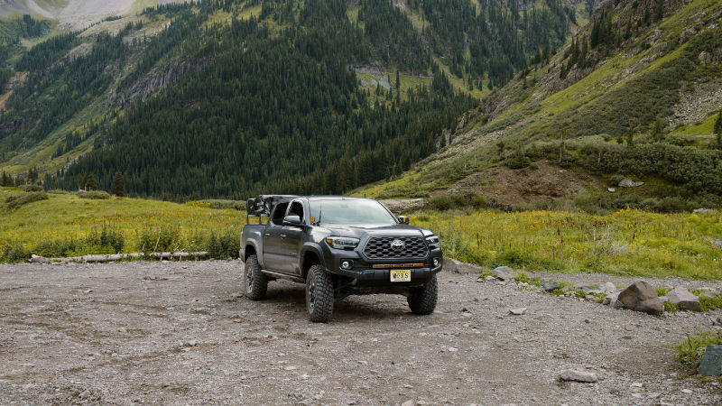

Header Logo
This website is awesome
This website has some subtext that goes under the main title. It's a smaller font and the color is lower contrast.

This website has some subtext that goes under the main title. It's a smaller font and the color is lower contrast.
The Toyota Tacoma may look cool, but is very underpowered. Many folks opt to increase tire-size, but after doing so need to regear their differentials. There is also an option of adding a supercharger, made by Magnusen. Finally you can opt to tune the computer.
Sign up to learn more about the Toyota Tacoma's weaknesses.